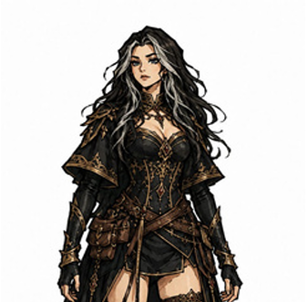

Yasmin
Preencha as informações desta ficha no HTML.
01 / resumo
Ficha do jogador
Identidade
NomeYasmin
EspécieAdicionar informação
ClasseAdicionar informação
SubclasseAdicionar informação
AntecedenteAdicionar informação
Informações
PVAdicionar informação
CAAdicionar informação
DeslocamentoAdicionar informação
IniciativaAdicionar informação
02 / capacidades
Atributos
Força--
Destreza--
Constituição--
Inteligência--
Sabedoria--
Carisma--
03 / conhecimentos
Perícias
Troque -- pelo bônus de cada perícia. Deixe -- nas perícias sem bônus.
Atletismo--
Acrobacia--
Prestidigitação--
Furtividade--
Arcanismo--
História--
Investigação--
Natureza--
Religião--
Lidar com animais--
Intuição--
Medicina--
Percepção--
Sobrevivência--
Enganação--
Intimidação--
Atuação--
Persuasão--
04 / detalhes da ficha
Informações do personagem
Magias
Adicionar informações sobre as magias.
Truques
Adicionar informações sobre os truques.
Habilidades
Adicionar informações sobre as habilidades.
Características de classe
Adicionar características de classe.
Talentos
Adicionar talentos.
Treinamento com equipamentos
Adicionar treinamentos.
Proficiências
Adicionar proficiências.
Idiomas
Adicionar idiomas.
Equipamentos
Adicionar equipamentos.